The single spec for every Habib dashboard. Pick a component, copy its config, follow its rules. Any session can build a card, button or page from this page without asking the owner for specs again.
v1.0 · Draft until GREEN LIGHTloader v16www/habib/glass/
1 · Describe
Write a wireframe with the names on this page (Build workflow). Friendly entity names are fine.
2 · Build
Claude maps each line to the config shown under the component, adds it to dashboards/habib-glass-build.py and builds a staging dashboard.
3 · Measure, then ship
Rendered at 375 to 1920 px and checked against Acceptance. Live dashboards change only on the owner's word.
Order of truth. Token values in www/habib/glass/base.js win, then this guide, then the detail pages in docs/design/library/. The Safety rules are Locked and override everything, including a wireframe.
The ten rules every build follows
Use custom:ui-* elements only. The old habib-* names stay registered so nothing breaks, but new work never uses them.
No fixed colour, size or duration in a component file. Tokens only; the test glass-style.test.mjs fails otherwise.
Every tap target is at least 44 px (56 px on the wall tablet). The visible part can be smaller (hit area helper).
Text contrast is at least 4.5:1. Secondary text uses --g-dim (84%), never lower.
Colour means state: warm = on or next, mint = safe, rose = needs attention. The text always says the state too.
Words never break mid-word and never clip. A name that does not fit steps down one type size.
Components size from their own width (container queries), never from the screen.
Door, garage and covers: a tap opens Home Assistant's own dialog. A card never calls a lock or cover service.
Entity IDs come from docs/entities.md or ha-mcp, never guessed and never written into JavaScript.
Nothing ships unseen: render, measure, then cut over on the owner's word.
Nomenclature
One naming scheme everywhere, modelled on Bootstrap 6: a base name, then sub-parts with a hyphen, then modifiers. No household name appears in an element, class or option.
When this guide is silent, decide with these. Each has a rule you can test.
#
Principle
Testable rule
1
Hierarchy
One hero per view. Size order: clock > numbers > titles > body > labels. No size between two type tokens.
2
Progressive disclosure
A phone shows state and one-tap actions. Detail is one tap down (section, accordion, three dots, drawer). At most 2 levels.
3
Consistency
A control looks and behaves the same everywhere. Build from components on this page before writing new CSS.
4
Colour means state
Warm = on or next, mint = safe, rose = attention. Never decorative.
5
Accessibility
Text 4.5:1, large text and icons 3:1, 44 px targets, every control named, focusable, works with Enter and Space. State is never colour alone.
6
Proximity and safety
Lock and garage sit apart from lamps and never act on one tap.
7
Alignment
Everything sits on the 12-column grid. No absolute positioning, no pixel nudges.
8
Hover
Hover may lighten a fill. It never shows anything touch cannot reach.
9
Failure feedback
No state change after 2.5 s: return to the real state and show "No response".
10
Orientation
Works in portrait and landscape. A phone in landscape gets the phone layout.
11
Locale
Clock, date and numbers follow the browser locale. Wording sits in one string table per card.
12
Performance
No new always-running animation, no second blur layer, drawings as SVG.
Colour
Dark glass with light text. One theme key sets the whole background family; the accents only ever mean state.
Change the background with one hex. Theme key habib-base (default #1c3226, evergreen) derives page, sheet, surface, scrim and wallpaper. Run python3 dashboards/habib-theme-build.py --base "#rrggbb", then reload themes. The script refuses a colour that drops text below 4.5:1.
habib-base#1c3226 · background family
--g-text#eef4ee · primary text
--g-dimtext at 84% · secondary text
--g-fainttext at 38% · placeholders only
--g-warm255, 201, 120 · on, next, "n on"
--g-mint159, 214, 181 · safe, secure, Adhan on
--g-rose255, 138, 128 · alert, error, unlocked
--g-heat#ffb36b · climate heating only
--g-cool#8fc9ff · climate cooling only
--ca lamp's own colour, from HA
Rule
Detail
Accents are triples
Stored as r, g, b so one token gives fill (20–24%), border (25–50%), glow (50–90%) and solid.
Lamp colour is data
Comes from the entity (kelvin or rgb), softened 15% toward white. Fallback glow 255, 196, 120. AiDot's placeholder report (rgbw 255, 0, 0, 0) is drawn white, because the bulb shines white (I52).
Surfaces
Card glass: white 13% → 4% → 7% gradient, 22 px blur, white 14% border. Well (inset): black 14–22%. Raised (pills, buttons): white 7–18%.
No teal
Owner decision D64. No decorative mint or rose.
Scheme
Dark only (D78). Light mode is in the backlog (B1).
Typography
Dashboards use two self-hosted faces: Outfit (display: numbers, titles, section labels) and Inter (text: everything else), fallback system-ui. This guide page uses Roboto and the Material 3 scale; the right-hand column maps each dashboard role to its nearest Material 3 role so you can talk about sizes in either language.
Token
Face, weight, size/line
Tracking
Used for
Nearest M3 role
clock
Display 200, 64–104 (follows card width, 26cqi)
-0.04em
hero clock
Display Large
metric-xl / lg / md / sm
Display 200, 56 / 40 / 36; 300, 30
-0.04 to -0.02em
temperature, dial, countdown
Display L / Display S / Headline L
headline
Display 700, 22/26
-0.01em
list title
Title Large
title-lg
Display 600, 18/22
0
weather condition, media title
Title Medium (larger)
title
Display 600, 17/22
-0.01em
card name
Title Medium
title-sm
Display 600, 15/20
-0.01em
Large card name, dock value
Title Small
section
Display 600, 13/16, CAPS
0.22em
heading on the wallpaper
Label Large (caps)
section-sm
Display 600, 12/14, CAPS
0.20em
section header
Label Medium (caps)
body
Text 500, 15
0
rows, list items
Body Large
label / label-b
Text 500 / 600, 13
0
secondary line, item name
Body Medium
state / sub
Text 600 / 500, 12/16
0
state line, subtitle, pill value
Label Medium
eyebrow
Text 600, 11/14, CAPS
0.14em
bar label
Label Small (caps)
caption / micro
Text 600, 11/13 and 10/12
0
chips, counters (compact parts only)
Label Small
Numbers use tabular-nums. Units are a smaller sibling, about half the number's size; the degree sign keeps the number's colour, AM/PM is dim. Sentence case everywhere except section and eyebrow. New work never goes below 12 px; 10 and 11 px exist only inside compact chips and dock bars.
Space, radius, size
Space --s-N
New work uses 4, 8, 12, 16, 24. The dense steps 2, 6, 10, 14, 18, 22 exist and stay inside compact parts.
Radius --r-*
Token
px
On
sheet
30
drawer top
card
26
every glass card and section
tile
20
inset tiles
panel
18
panels
item
16
security items, list rows
chip
14
compact cards
control
12
control pill, steppers
small
8
small parts
pill
999
pills, round buttons
A shape inside another is at least 6 px smaller than its parent.
Key sizes --z-*
Token
px
Meaning
touch
44
minimum hit area (56 on the wall tablet)
row
56
one grid row
bar
60
collapsed accordion
bar-stack
52
dock bar
slider
34
control pill height (44 hit area)
card-lg-min
120
Large card minimum height (2 rows)
card-lg-art
56
art box in a Large card
section-pad
10
section padding
gap-card
8
gap between cards
label-gap
10
gap under a heading
stepper
44
climate − / + buttons
sheet-max
560
drawer maximum width
All lengths scale with theme key habib-scale (default 1).
Motion, elevation, icons and art
Motion --m-*
Press: scale 0.97, spring, 0.18 s.
Fast: 0.2 s · State change (colour, glow): 0.4 s · Drawer: 0.32 s.
Timers: pending 2.5 s · "No response" shown 4 s · setpoint send 0.8 s after the last tap.
Ambient loops (lamp breathing, weather) run only on visible state.
prefers-reduced-motion turns all of it off.
Elevation and blur
One shadow for all cards. A lit lamp tints it with its own colour.
Blur 22 px on cards, 30 px on drawers. prefers-reduced-transparency turns blur off and uses a solid surface.
type: custom:ui-section
title: Living Room
note: Nursery not included # optional, dim text after the heading
collapsed: false # default: starts open
collapsed_view: none # none | compact (Compact cards when closed)
collapsible: true # false = always open, no chevron
remember: true # false = starts as configured on every load
cards:
- {type: custom:ui-card, name: Floor Lamp, art: floor-lamp, entities: [light.floor_lamp]}
Anatomy
Part
Class
Notes
Container
.glass
glass surface, padding 10
Header
.section-header
whole row is the toggle; 44 px hit area
Heading
.heading
section-sm caps
Note
.section-note
optional, dim, one line, ellipsis
Summary
.section-sum
"2 on" (warm) or "All off"; without lights, the children's summaries joined with " · "
Chevron
.fold
up when open, down when collapsed
Body
.section-body
12-column grid, gap 8
Behaviour and accessibility
Tap, Enter or Space on the header toggles; remembered per device unless remember: false.
With compact: tapping a Compact card toggles its lights; the header opens the section.
Header is role=button with aria-expanded and a label that includes the summary ("Living Room, 2 on, collapse").
Every room gets its own section. Use collapsible: false for always-open groups on wide screens (Home, Floors) and collapsed: true, remember: false for rooms inside a "Lights" section, so they start closed on every load.
Grid
DraftLayout
Inside a group and a section body, cards sit on a 12-column grid with an 8 px gap. Rows are 56 px.
Card
Columns
Rows
Large card
6
2 (120 px)
Large card, size: wide
12
2
Control pill (variant: control)
12
1
Button chip / tile
4 / 6 (set with grid_options)
auto
Section, accordion, data cards
12
auto
Override per card: grid_options: { columns: 4, rows: 2 }. A column is 320–500 px wide, so a 6-column Large card is 152–236 px; container queries handle the rest.
Fluid rule
ui-page packing: fluidDraftLayout
On wide screens the page arranges groups itself, so a dashboard needs no hand placement and columns stay balanced. Phones are untouched.
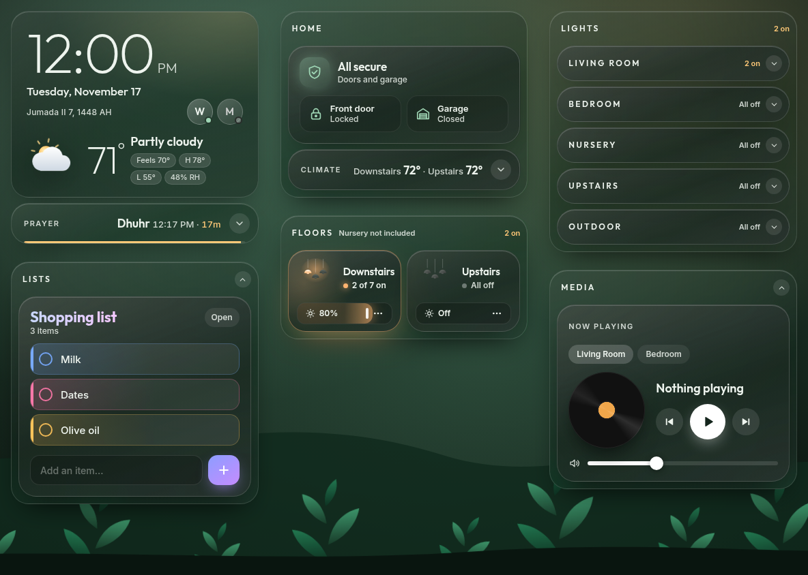
habib-wh-next at 1184 px: hero and prayer pinned left, Lights pinned right, the rest balanced.
#
Rule
Config
1
Chains: a group stays directly under another group, in the same column.
with: <group id>
2
Pins: a group (and its chain) goes to a fixed column. 1 = leftmost, -1 = rightmost.
column: 1 / column: -1
3
Balance: every other group goes, tallest first, into the shortest column; ties go left.
–
4
Reading order: inside a column, groups stack in config order.
–
5
No jumping: columns are set once per column count after a 1.5 s settle. Opening a section moves only what is below it.
Measured 2026-11-17: blank area between groups at most 0.42%. Pin only the hero and the long "Lights" column; let the rule place the rest.
Components
Every component below has the same parts: purpose, image, when to use it, the wireframe line that asks for it, its config, options, anatomy, states, behaviour, and helper text. Images are real renders at phone width (430 px) with mock states.
Large card
custom:ui-cardDraftLights, plugs, groups
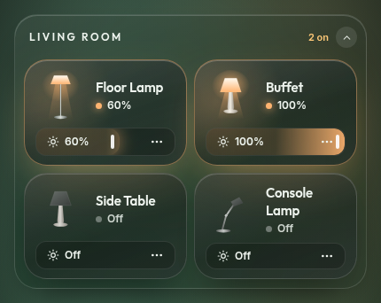
Two on (glow in the lamp's colour), two off.
One light or group with art, name, state and a control pill, in as little space as possible (120 px tall).
A lamp, a plug lamp, or a group of lamps that act as one ("Downstairs").
Wide screens and open sections.
Don't
Locks, covers, climate, alarm or media: they have their own cards.
Phone rooms that should fit one screen: use Compact cards.
card "Floor Lamp" art: floor-lamp light: living room floor lamp (add size: wide for a full row)
type: custom:ui-card
name: Floor Lamp
art: floor-lamp # see Motion and art
entities: [light.floor_lamp] # one or more; lights and switch plugs may mix
size: wide # optional: 12 columns
Options
Key
Default
Meaning
name
friendly name
title, up to 2 lines, never broken mid-word
art
table-lamp
lamp drawing; group = three pendants lit by how many are on
A vertical swipe that starts on the pill scrolls the page and never dims.
Card is role=button with aria-pressed and label "Name: state". Pill is role=slider; arrow keys step ±10%.
Turning on sends only brightness_pct; colour changes only from the shade drawer.
Two cards per row. If a room has an odd number of lamps, make the first one size: wide. Nursery lamps never join a floor group.
Compact card
ui-section collapsed_view: compactLockedLights
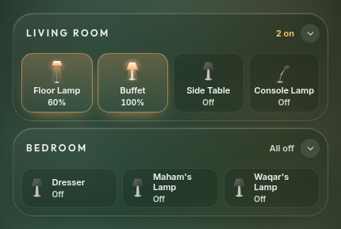
Collapsed sections drawing a chip per light.
A small toggle for one light or group. You don't place it yourself: a collapsed section with collapsed_view: compact draws one per Large card inside it.
Per row
at most 4
Tap
toggles the light
Status
Locked (owner, 2026-11-17)
Use when
A phone view must fit one screen (habib-mkh).
Quick on/off for a room without opening it.
Don't
Expect brightness or colour here: open the section for the Large card.
type: custom:ui-accordion
collapsed: true # default
remember: true # keeps the viewer's last choice on this device
layout: stack # optional: 52 px half-width dock bar
card:
type: custom:ui-climate
entities:
- {entity: climate.downstairs, name: Downstairs}
- {entity: climate.upstairs, name: Upstairs}
The bar text has a long and a short form ("Downstairs 72° · Upstairs 71°" / "72° · 71°"). The bar picks the one that fits, so it is always one line. Screen readers always get the long form.
Bar
.glass.miniLockedFolded card
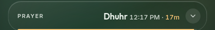
60 px bar with eyebrow label, value and chevron.
Variant
Height
Layout
Bar
60 px
label (eyebrow caps), value right-aligned, chevron; optional 3 px progress line (prayer)
Dock bar (.stack)
52 px
44 px icon column, label over value, chevron; half width
Always one line. Value in long and short forms; aria-label carries the long form.
direct: true (one entity) opens HA's dialog instead of unfolding: front door, garage.
You never write a Bar yourself: an Accordion or a Dock makes it. Write card summaries that fit about 100 px at phone width.
Drawer
openDrawer()DraftDetail settings
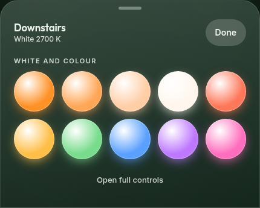
Shade drawer (from a card's three dots).
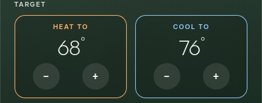
Climate drawer (from a climate dial).
The glass panel that slides up for detail settings. It replaces HA's white dialogs where the library has its own controls.
Part
Class
Notes
Scrim
.scrim
tap closes
Panel
.drawer
max 560 px wide, radius 30 top, max 92% of the screen tall, scrolls
Handle
.drawer-handle
38 × 5
Header
.drawer-header
title, sub, Done (.drawer-done, 44 px)
Group label
.drawer-label
eyebrow caps
Bottom link
.drawer-link
"Open full controls" (HA's own dialog)
Shade drawer
Ten swatches, 5 per row: Candle 2200 K, Warm 2700 K, Neutral 4000 K, Daylight 6000 K, then Coral, Amber, Green, Blue, Violet, Pink (colours only when the light supports colour). A tap sends light.turn_on with color_temp_kelvin or rgb_color.
Climate drawer
Now: current temperature and what the system is doing.
Mode: one button per hvac_modes; a tap sends climate.set_hvac_mode at once.
Target: Auto shows Heat to and Cool to; Heating or Cooling shows one. − and + (44 px) change the value; 0.8 s after the last tap one climate.set_temperature call is sent.
Limits: the thermostat's own min, max and step; Heat to stays at least 3° under Cool to.
Feedback: "Sending…" until HA reports the value; "No response" after 4 s; "Not accepted" if the call fails.
Escape, Done or a tap on the scrim closes. A drawer never controls a lock, cover or alarm.
Badge
.badgeDraftStatus
A small status pill. The text always names the state; colour only repeats it. Used today for the Adhan status in Prayer times.
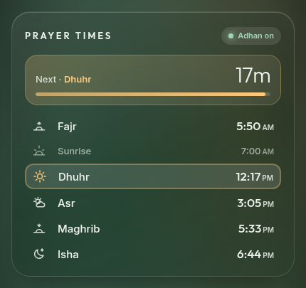
.badge-on: mint, "Adhan on".
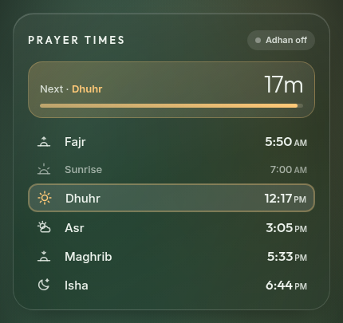
.badge-off: dim, "Adhan off".
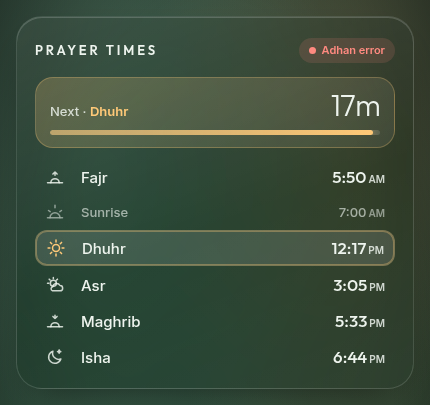
.badge-error: rose, "Adhan error".
Status
When
on
the playback switch is on, every Adhan automation is on, and the error helper is empty
off
the playback switch is off
error
the switch is missing or unavailable; or it is on but an Adhan automation is off; or the last playback failed. The error text is in the tooltip.
Hero
custom:ui-heroDraftData card
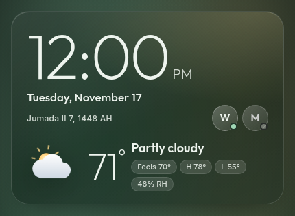
Full hero.
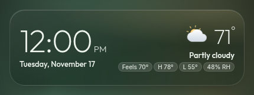
compact: true: 130 px phone hero.
Clock (follows the card width), date, Hijri date, weather with feels-like, high, low and humidity, and people.
No other component may call a climate service. Give each thermostat a short name so dock bars stay one line.
Security
custom:ui-securityDraftData card · door, garage
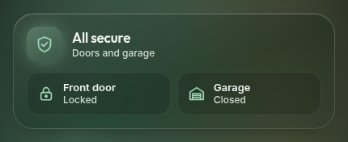
All secure: mint shield.
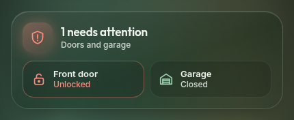
Alert: rose shield, the item says what is wrong.
A shield plus one tile per door or garage. Every tile is clickable: a tap opens Home Assistant's own lock or garage dialog, so unlocking or opening always takes two deliberate taps. The card itself never calls a lock or cover service.
Use when
Front door lock, garage door, any cover or door sensor.
On every dashboard that shows the door or garage (owner, 2026-11-17).
Don't
Add a toggle, slider or button that acts on a lock or cover.
Use tap: none unless the owner asks for status only.
security front door, garage
type: custom:ui-security
subtitle: Doors and garage # optional
items:
- entity: lock.living_room_front_door
name: Front door
kind: lock # lock | garage | door (guessed from the domain)
states: {locked: Locked, unlocked: Unlocked, jammed: Jammed}
- entity: cover.general_garage_door_garage_door
name: Garage
kind: garage
states: {closed: Closed, open: Open, opening: Opening, closing: Closing}
Item key
Default
Meaning
entity
required
lock.*, cover.* or a door sensor
name
friendly name
tile label
kind
from the domain
icon: lock, garage or door
states
capitalised state
wording per state
ok_states
[locked, closed, off]
states that count as secure (mint)
tap
more-info
opens HA's dialog; none = status only (loader v15)
In a phone dock, use one security card per item with direct: true: one tap on the bar opens HA's dialog straight away.
Media
custom:ui-mediaDraftData card
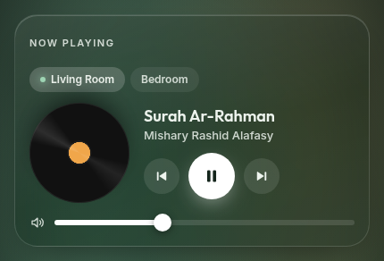
Playing, with speaker tabs.
Player tabs per speaker, artwork or record, transport and volume (44 px hit area).
Summary
now playing, or "Nothing playing"
Name
"Media" on wide screens, "Listen" on phones
section "Media" media: living room HomePod, bedroom HomePod
Dock bars are Locked at 52 px and must stay one line: use the short names on climate entities.
States and wording
Every control can show these six states, with exactly these words.
State
Look
Text
Off
desaturated art, dim dot
"Off", "All off"
On
accent or lamp-colour border and glow, coloured dot
"82%", "On", "3 of 7 on"
Pending
unchanged
"…" for up to 2.5 s
No response
50% opacity, not tappable
"No response"
Not found
50% opacity, rose note
"Not found", "Missing: <id>"
Alert
rose border and icon
the state word, e.g. "Unlocked"
Helpers
Shared by every component, all in base.js. Use them; don't rebuild them.
Helper
Class / function
What it does
Hit area
.tap
a control smaller than 44 px gets an invisible 44 px target; visible size unchanged
Focus ring
:focus-visible
2 px warm ring
Press
.press
scale 0.97, spring 0.18 s
Hover
@media (hover: hover)
raised fill lightens; never on touch screens
Text fit
fitText()
never breaks a word; if the longest word overflows, the type steps down one role
Container queries
.chipbox and others
size from the component's own width
Reduced motion
prefers-reduced-motion
all animation off
Reduced transparency
prefers-reduced-transparency
blur off, solid surface
Feedback
_begin()
pending 2.5 s, then the real state and "No response" for 4 s
Dialog
moreInfo()
opens HA's own dialog for an entity (door, garage, "Open full controls")
Building a new component
Write its page first (status Planned) with the same parts as the components above.
One file in www/habib/glass/, extending GlassCard: _validate, _signature, _render, and _summary if it can sit in an Accordion.
Render only when the states it shows change (the signature).
Every entity, name and label comes from config; no entity ID in JavaScript.
Pure logic goes in habib-glass-logic.js with a node test.
Role, aria-label with the state, Enter and Space, focus ring; the six states with the words above.
Bump VERSION in loader.js and the resource URL together.
Safety rules Locked
No component, wireframe or option may override these.
Locks, garage and covers: no card calls a lock or cover service. A tap opens Home Assistant's own dialog (two deliberate taps to unlock or open). Every dashboard makes the door and garage clickable this way.
Adhan: shown, never changed by any card. It changes only through the Adhan package and the owner's GREEN LIGHT.
Climate: only the climate drawer of ui-climate may call climate.set_hvac_mode and climate.set_temperature, within the thermostat's limits and a 3° gap.
Alarm and media:ui-button refuses alarm and media_player entities.
Nursery lamps stay out of floor groups.
Entity IDs come from docs/entities.md or ha-mcp; never guessed; never in JavaScript.
Never edit .storage/; dashboards change through ha-mcp. Live dashboards change only at cutover, on the owner's word.
Nothing unseen ships: every layout is rendered and measured before it reaches a device.
Build workflow
How the owner asks for something new, and what Claude does with it.
1. Write the wireframe
One line per part, indented by nesting, using the wireframe lines shown with each component. Friendly entity names are fine; Claude looks up the real IDs and asks if one is ambiguous.
page (max 4 columns, fluid)
hero clock, weather, people: Waqar, Maham
accordion > prayer Adhan badge
section "Home"
security front door, garage
accordion > climate downstairs, upstairs
section "Kitchen" collapsed_view: compact
card "Pendants" light group: kitchen pendants
card "Under cabinet" size: wide
section "Listen"
media living room HomePod
phone: dock front door (direct), garage (direct), climate, media
2. Claude builds and checks
Maps every line to the config on this page.
Adds it to dashboards/habib-glass-build.py and builds a staging dashboard <name>-next (admin only).
Renders at 375 to 1920 px with tests/habib-ui/render/render.mjs and measures against Acceptance.
Shows the screenshots and numbers.
Cuts over only on the owner's word.
A part that is missing from this guide becomes a new component (status Planned) before it is built. Commit the wireframe as docs/prompts/<target>/YYYY-MM-DD-<slug>.md or paste it.
Acceptance
A change passes when all of these hold at 375, 430, 820, 1024, 1184, 1280, 1440, 1920 and 2560 px wide.
Every font, size, weight, radius and colour equals a token.
No sideways scroll, no clipped or mid-word-broken text, no overlap.
Every control at least 44 px (56 on the wall tablet); text at least 4.5:1.
The six states render with the wording above.
Tab reaches every control; focus ring shows; Enter and Space act.
Reduced motion and reduced transparency render correctly.
Lock and garage click test: zero service calls (HA's dialog only).
Wide: blank area between groups under 5%; chip unused width under 12 px; dock bars one line at 52 px.
node --test tests/habib-ui/*.mjs and ha core check pass; the config is read back and its hash recorded.
Last staging result (2026-11-17): all 9 pass. Lowest contrast 4.6, 0 targets under 44 px, blank area at most 0.42%, unused chip width at most 11 px.
Gap list
Cleaned 2026-11-17. Open items first; the owner sorts priority.
Open
#
Gap
Next step
Owner call?
G1
Live habib-wh and habib-mkh still use the old layout; the staging fixes reach them only at cutover
Owner checks staging on the Mac and iPhone, then says cut over
Yes
G2
Not yet seen on the wall tablet
Measure on arrival (about 2026-11-20): viewport, pixel ratio, columns with the sidebar hidden, 56 px targets
No
G4
Material You Utilities loads on every page and is unused
Remove from configuration.yaml (restart, needs GREEN LIGHT)
Yes
G5
No performance budget
Set once the tablet is measured
No
G6
27 text styles across 16 sizes
Merge 17/18 and 12/13 px when cards are next changed
Yes
G7
11 spacing steps in use
Move to 4, 8, 12, 16, 24 when a card is next changed
No
Backlog
#
Gap
Note
B1
Light mode (I54, D78)
Lower priority. Path: light and dark values in the theme, cards read them, a light wallpaper.
Closed
Was
Gap
How it closed
G3 / I52
Lamps drawn red while white
AiDot reports rgbw 255, 0, 0, 0 after a brightness-only turn-on; drawn white since loader v14 (2026-11-17)
new
Door and garage not clickable on habib-wh and habib-wh-next
Tap opens HA's dialog on every dashboard; the default since loader v15 (2026-11-17)
2
Text contrast too low
Dim text raised to 84%; lowest on staging 4.6
3
7 controls under 44 px
Hit-area helper; none under 44 on staging
5
Two slightly different warm colours
Accepted as separate roles
7
Column count
The rule matches every measurement
8
Blank page at 699–700 px
The page uses its own width
9
Dock bars wrapping
19 bars, one line, 52 px
10
"Times unavailable" after Isha
"All done today" (live since v11)
11
Empty space under the clock on wide habib-mkh
Fluid rule
12
Slider value used a fixed white
Fixed values banned by the style test
13 (part)
nuvio.js and Material Symbols loading
Removed by the owner (I61)
I59
Wasted space, broken words, chip slack, wrapping bars, fixed green
Staging measurements; colour from one hex
Changes
Version
Date
Change
v1.0 (draft)
2026-11-17
One HTML guide replaces docs/design-guide.md v0.2 and the library index as the entry point. Real renders for every component; wireframe line and helper text per component; Material 3 page styling; cleaned gap list; I52 and door/garage taps closed.
Sources: www/habib/glass/, docs/design/library/, docs/design/habib-tokens.yaml, docs/sessions/2026-11-17-habib-layout.md, decisions D48, D60, D64, D70, D71, D75 to D81. Images rendered with tests/habib-ui/render/ at 430 px with mock states (no real household data).